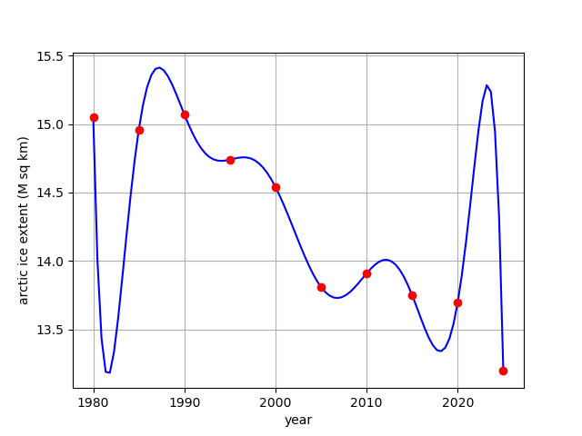

Additional Examples 3.1
1 (a) Find the polynomial of lowest degree that passes through the points \( (-2, -9), (-1, -1), (1, -9), (3, -9)\) and \( (4, 9)\). (b) Find a degree 6 polynomial that passes
through the points.

(a) The Newton divided difference diagram is
\begin{array}{rrrrrrrrrr}
-2&|&-9\\
&|&&8\\
-1&|&-1&&-4\\
&|&&-4&&1\\
1&|&-9&&1&&0\\
&|&&0&&1\\
3&|&-9&&6\\
&|&&18\\
4&|&9
\end{array}
Therefore, the lowest degree polynomial passing through the points is \(P_3(x) = -9+8(x+2)-4(x+2)(x+1)+(x+2)(x+1)(x-1).\)
(b) \(P_6 = -9+8(x+2)-4(x+2)(x+1)+(x+2)(x+1)(x-1)+5(x+2)(x+1)(x-1)(x-3)(x-4)^2\) is an example of a degree 6 polynomial that passes through the set of points.
2 The National Snow and Ice Data Center at Boulder, CO estimates the ice extent at the North Pole in units of million square kilometers, using remote sensing from satellites. The January extent from the last few decades is shown in the table.
\begin{array}{cc}
1980 &15.05\\
1985 &14.96\\
1990 & 15.07\\
1995 & 14.74\\
2000 & 14.54\\
2005 & 13.81\\
2010 & 13.91\\
2015 & 13.75\\
\end{array}
Use newtdd.m and nest.m to plot the degree 7 interpolating polynomial through the 8 data points. Use the polynomial to estimate the ice extent in 2002 and 2012 and compare with the exact values (\(14.57\) and \(13.86\), respectively).
The plot below shows the interpolating polynomial. Evaluated at 2002, the polynomial value is 14.30. Evaluated at 2012, the polynomial value is 14.43.
